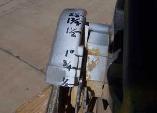

BOB JOHNSTON
I marked on the back of my saws the depth of cut plus one-eighth inch. 1 1/2 inch is actually 1 5/8-inch depth of cut (to be sure it cuts through the thickness of the board). This saw is set for a 1/4-inch cut but the actual blade depth is 3/8 inch.